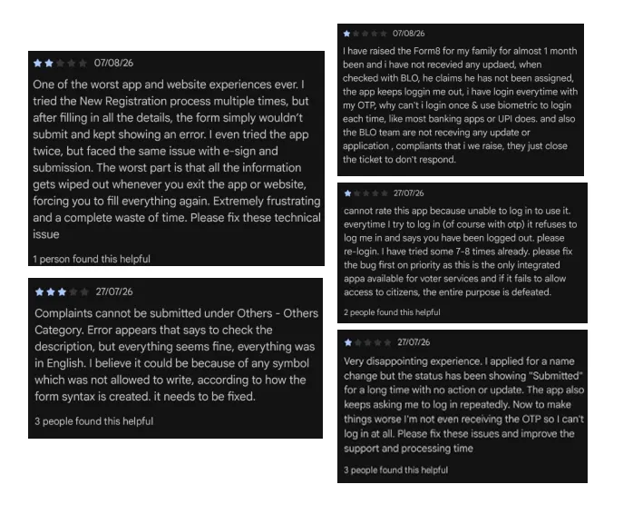
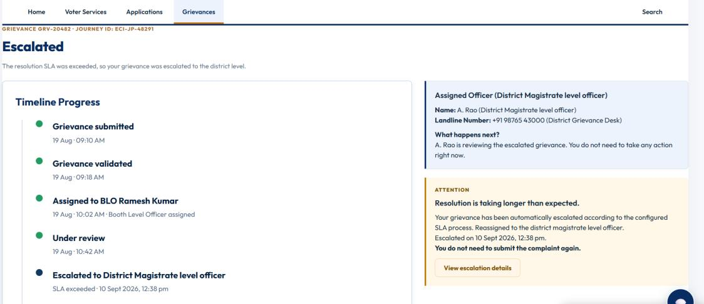
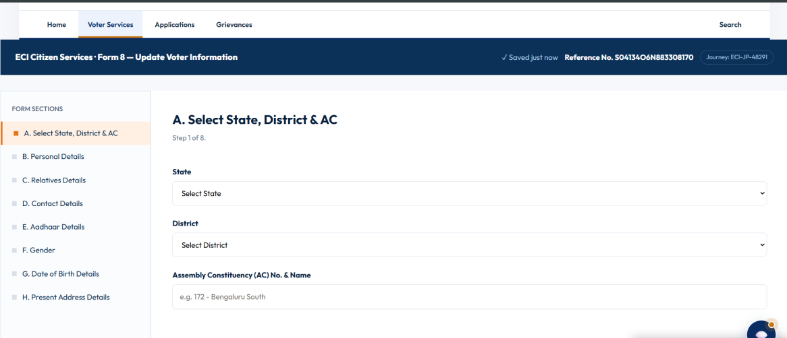
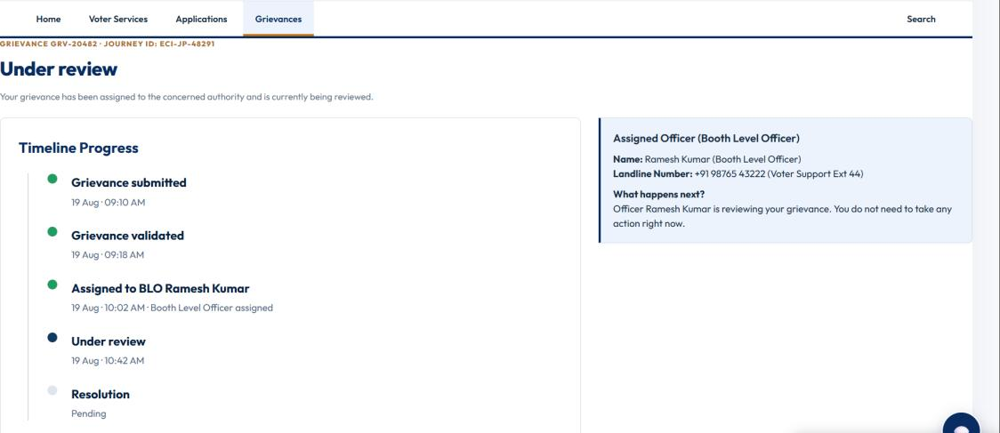
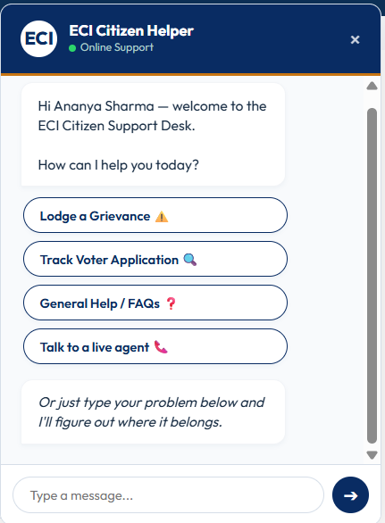

ECI Citizen Services Rebuild
Forms failed silently, and grievances vanished into nowhere. We rebuilt the experience around one Journey ID, a visible grievance timeline with a named officer, and an SLA clock that escalates itself.
This was designed as part of the Build What Moves India contest, where our team qualified to the top 250.
Forms fail silently, and grievances vanish into nowhere.
Submitting a completed form could error out with no explanation, wiping everything and forcing a restart. Filed grievances could go weeks without an update, with one citizen learning after a month that they had never even been assigned an officer. Repeated OTP failures also logged citizens out mid-login. ECI's site draws tens of millions of visits a month - whatever is broken here is not small.
What people actually wrote

Two fixes, one idea: nothing disappears.
Journey
One Journey ID replaces the blind resubmission cycle.
A visible progress bar and persistent reference number mean nothing gets wiped by a failed submit. A QR handoff lets citizens pick up the same saved journey on another device.
Grievances
Every grievance gets a named officer and an SLA clock that escalates itself.
Citizens see who has their case and what stage it is at. If it runs past the SLA, it escalates automatically and says so - no re-filing, no guessing.

Five screens that carry the whole flow.



Status, ownership, and continuity are now visible by default - not something citizens have to chase.
What I'd carry into the next project
Visibility over speed
Visibility builds more trust than speed - showing status beats optimizing it.
Show the escalation
Silent automation reassures no one - escalation has to be shown, not just run.